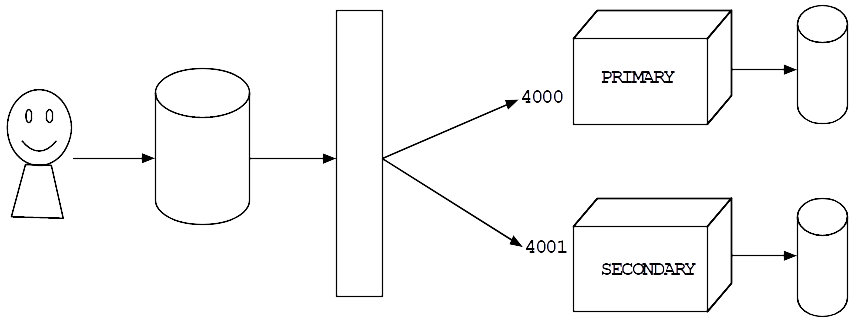

cd ~ mkdir node0 mkdir node1
mongod --dbpath node0 --port 4000 --replSet "rs0"
mongod --dbpath node1 --port 4001 --replSet "rs0"
mongo --port 4000
rs.initiate()
rs.conf()
rs.add("localhost:4001")
rs.status()
mongo --port 4001
rs.slaveOk()
use mydb
db.names.insert({"full-name":"James Bond"})
db.names.find()
use mydb db.names.find()
use admin db.shutdownServer()
mongod --dbpath node0 --port 4000 --replSet "rs0"
mongod --dbpath node1 --port 4001 --replSet "rs0"
mongo --port 4001
rs.slaveOk()
mongo --port 4000
use mydb
db.names.insert({"full-name":"Harry Potter"})
db.names.find()
use mydb db.names.find()